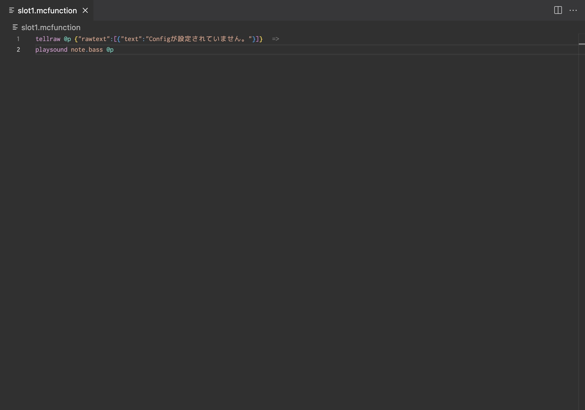
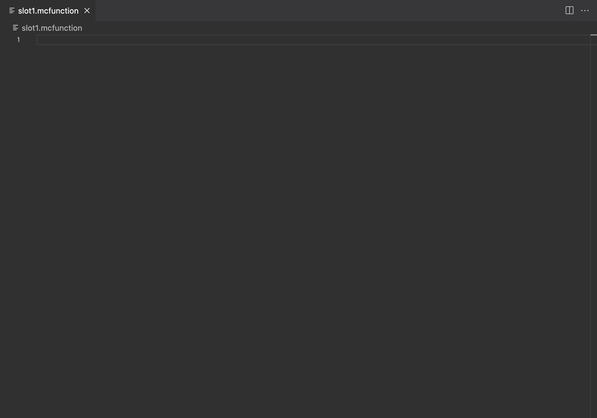
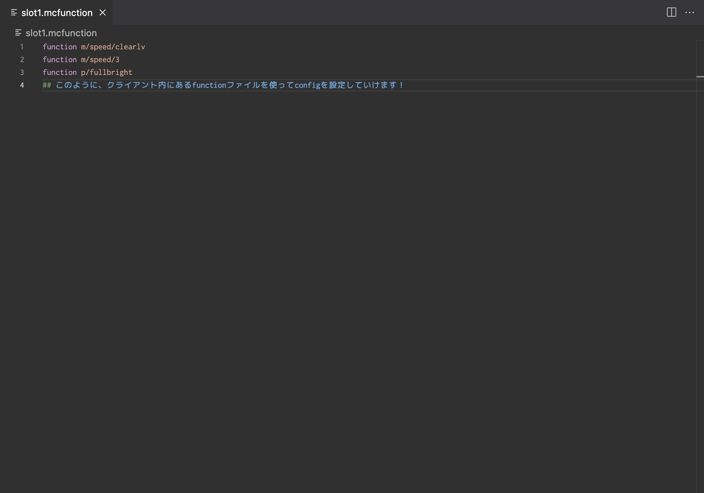

Configとは
Configとは、事前に設定していた設定ファイルのことで読み込むといつでもその設定したものを開ける代物です
しかし、初期設定のSeedCamの中身には設定されていません。今回は、それを解消するためConfigをいじるお話になります。
※ファイルの中身をいじったことがある人、VSCODEを持っている人。コマンドが書ける人が対象になります。それでもやりたい方は、コマンドがかける人にお願いを申し出てくれると助かります。
🔽 ''functions/config/slot1.mcfunction''の中身
もとから入っているslot1,slot2,slot3は中にコマンドが書いてありますが、消してしまって構いません！
🔽 コマンドの中身をすべて消した後
この後、コマンドを書いていきます。
コマンドを書く場合、SeedCamのfunctions内にあるmcfunctionを使っていてやるとやりやすいと思います。
ほとんどの機能レベルのリセット機能があります。clearlv.mcfunctionなどを最初に実行してあとにチート機能をつけるとやりやすくなります。(したの写真の様になる)
終わりです。気が向いたらConfig配布とかもするかもね